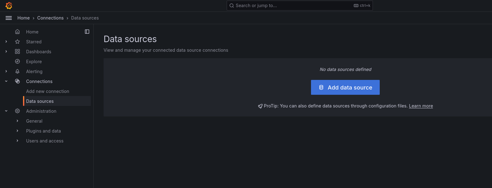
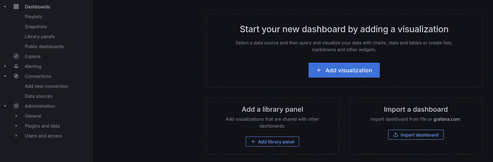
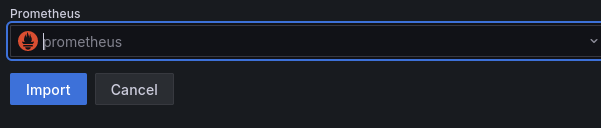

ExploreNym Monitoring Scripts
Community Monitoring Tools
Individual operators, node families and squads are the foundation of distributed network. There has been a great number of tools coming out of this community some of which can be deployed for the node monitoring setup.
Make sure you understand and properly evaluate what degree of control you give permission to before granting access to your data to any tools running on someone else’s servers.
ExploreNYM Tools
Long term involved operator Pawnflake, an author of ExploreNYM explorer, created a monitoring flow, which can be used by other operators called self-hosted-monitor. It utilises bash scripts to enable operators setup Prometheus and Grafana together with Node Exporter and Nginx to run their metrics monitoring stack locally.
In collaboration with ExploreNYM we published a step by step guide to set this up.
ExploreNYM also has a network measuring instance called enym-monitor. This setup is very simple for users, however it means that their data are all aggregated into one server and that is a design we would like to discourage from using as a primary one because such setup always brings a risk of centralisation of distributed node’s data into one computer.
Setup
This setup and the scripts included were not written by Nym developers. As always do your own audit before installing any scripts on your machine and familiarize yourself with the security risks involved when opening ports or allowing http access.
According to ExploreNYM the system requirements of the monitor stack are:
- 2 CPU
- 4 GB RAM
- 20 GB of free disk space.
The monitoring part setup
This can be setup on another VPS than the node if desired. We recommend to try to set this up on the same VPS, as your node as we expect the machine to be strong enough to handle the node with enough capacity reserve for monitor.
- Install git
apt install git
- Clone the repository to
~/self-hosted-monitor
git clone https://github.com/ExploreNYM/self-hosted-monitor ~/self-hosted-monitor
- Give permissions to
prometheus.shscript and run it to setup Prometheus
chmod +x ~/self-hosted-monitor/prometheus.sh && ~/self-hosted-monitor/prometheus.sh
- Give permissions to
grafana.shscript and run it to setup Grafana
chmod +x ~/self-hosted-monitor/grafana.sh && ~/self-hosted-monitor/grafana.sh
- Open port
3000to allow access to Grafana
sudo ufw allow 3000
-
You can now access Grafana at
http://<YOUR_IP_ADDRESS>:3000. -
(Optional step) If you have a registered domain and prefer to use it with
https, give permissions tonginx-certbot.shscript and run it to setup Nginx and Certbot
chmod +x ~/self-hosted-monitor/nginx-certbot.sh && ~/self-hosted-monitor/nginx-certbot.sh
- Give permissions to
prometheus-target.shscript and run it to add a scrape target. This can be run multiple times to add a new server to be monitored via Prometheus/
chmod +x ~/self-hosted-monitor/prometheus-target.sh && ~/self-hosted-monitor/prometheus-target.sh
The target server (the part to be monitored) setup
If you run a monitoring stack and your node on two different VPS, the steps 9 and 10 need to be done on the VPS with the running node. In case you do it on the same VPS, skip directly to step 11 and continue.
- Install git
apt install git
- Clone the repository to
~/self-hosted-monitor
git clone https://github.com/ExploreNYM/self-hosted-monitor ~/self-hosted-monitor
- Give permissions to
node-exporter.shscript and run it to setup Node exporter.
chmod +x ~/self-hosted-monitor/node-exporter.sh && ~/self-hosted-monitor/node-exporter.sh
Grafana dashboard setup
Finally we need to access Grafana dashboards.
-
Open a browser at
http://<YOUR_IP_ADDRESS>:3000orhttps://<YOUR_DOMAIN>(depends on your setup), enter usernameadminand passwordadminand setup new credentials on prompt -
Setup Data source by opening menu ->
Connections->Data sources->+ Add new data source->Prometheus


-
In the field Connection next to
Prometheus server URLenterhttp://localhost:9090(regardless if you accessing Grafana viahttporhttpsas this is for internal connection on the server). When you are done in the bottom confirm bySave & Test -
In the menu open:
Dashboards->+ Create dashboard->Import dashboard

- ID field: enter
1860->Load

- In Import dashboard page select Prometheus in the bottom and finally
Import

Now you have your Prometheus panels displayed via Grafana dashboard for a simple monitoring of your node.
Verification and Troubleshooting
To ensure that your services are running correctly, you can verify that by running systemctl status <SERVICE> or run a journalctl -f -u <SERVICE> to print service logs. It shall return status Active: active (running). For example:
# to check if Prometheus service is active
systemctl status prometheus
# to check if Grafana service is active
systemctl status grafana-server
# to check if node-exporter service is active
systemctl status node_exporter
# to run journal log
journalctl -f -u prometheus # or any other service you want to see